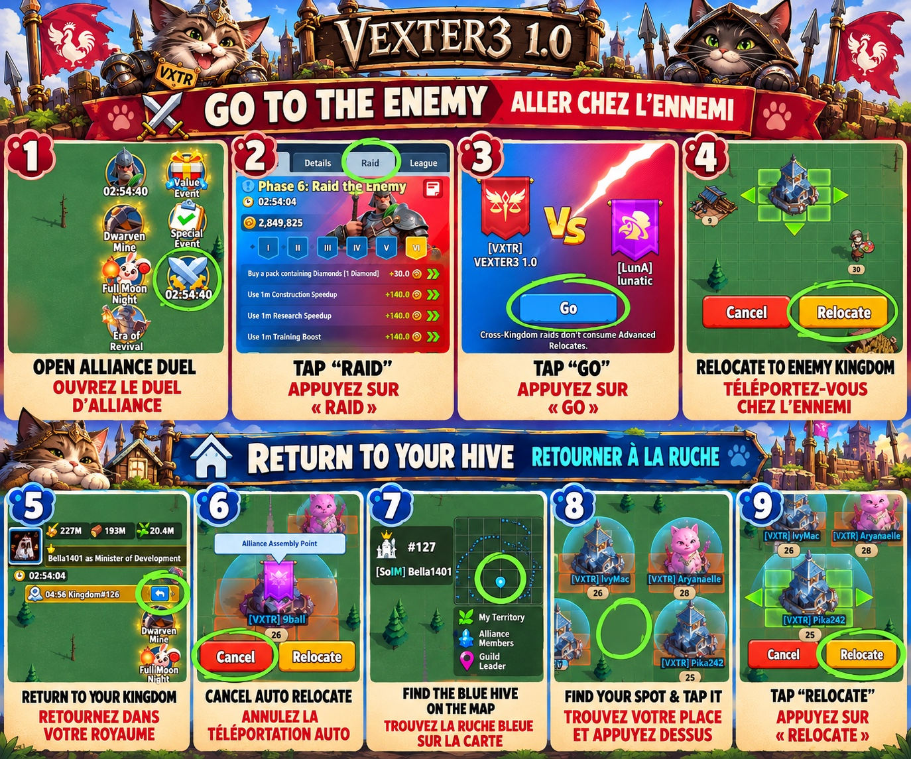
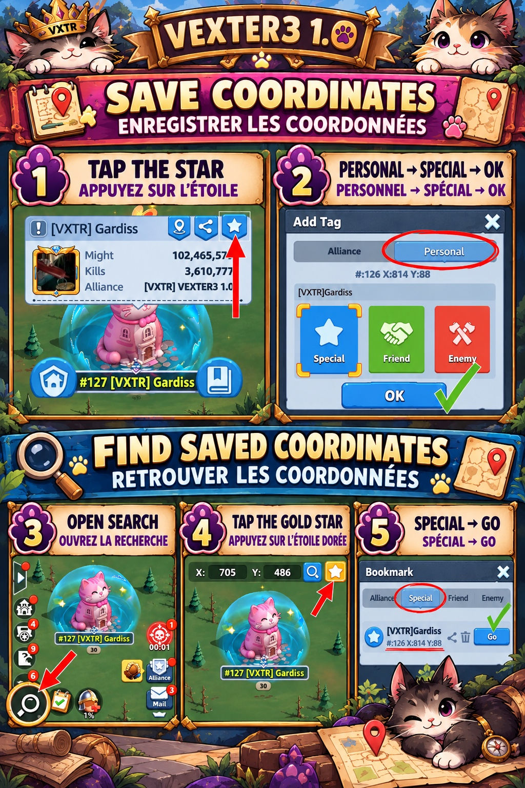

13. Base Relocation: Tips & Tricks
Two illustrated guides for moving safely and finding your way home.
Free Teleports During Alliance Duel
During the Raid phase of Alliance Duel, use the event’s Raid tab and Go button to travel to the enemy kingdom. Confirm Relocate on the map. To return, select the return-to-kingdom control, cancel automatic relocation, locate the blue alliance hive, tap your assigned spot, and select Relocate.

Save & Find Coordinates
Save your base or hive coordinates before leaving: open the location, tap the star, choose Personal, then Special, and confirm with OK. To find them again, open map search, tap the gold star, select Special, and press Go on the saved location.

13. Téléportation de base : conseils et astuces
Deux guides illustrés pour vous déplacer et retrouver votre chemin.
Téléportations gratuites pendant le Duel d’Alliance
Pendant la phase Raid du Duel d’Alliance, ouvrez l’onglet Raid et appuyez sur Go pour rejoindre le royaume ennemi. Confirmez Relocate sur la carte. Pour revenir, utilisez le bouton de retour au royaume, annulez la téléportation automatique, repérez la ruche bleue de l’alliance, touchez votre emplacement attribué et choisissez Relocate.
Enregistrer et retrouver des coordonnées
Enregistrez les coordonnées de votre base ou de la ruche avant de partir : ouvrez l’emplacement, appuyez sur l’étoile, choisissez Personnel, puis Spécial, et confirmez avec OK. Pour les retrouver, ouvrez la recherche sur la carte, appuyez sur l’étoile dorée, choisissez Spécial, puis Go sur l’emplacement enregistré.